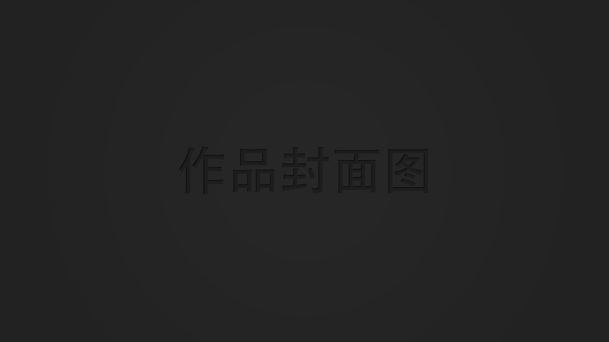
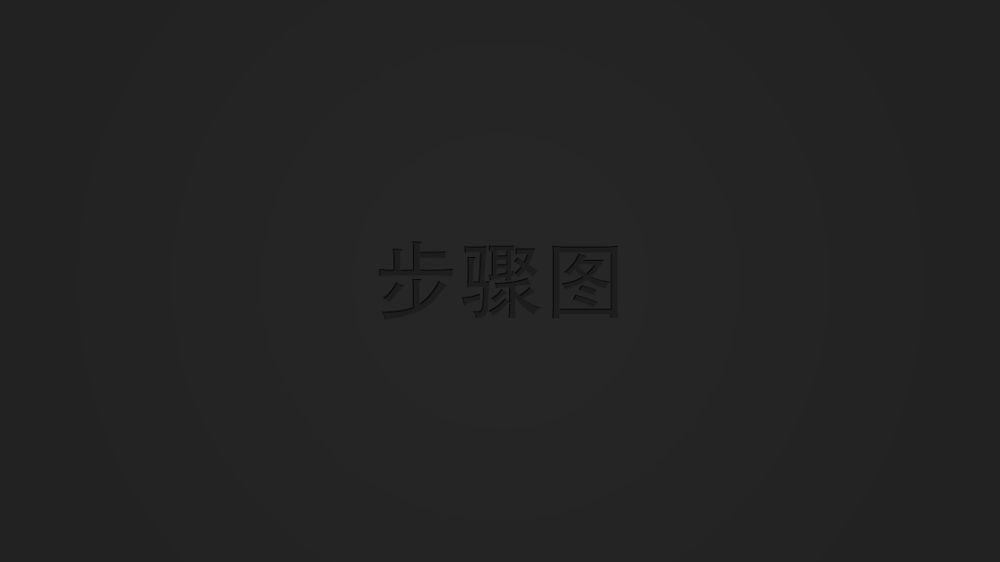

<ion-view view-title="发布教程" hide-tabs="true">
	<ion-nav-buttons side="right">
	  <a class="button button-icon icon iconfont icon-xuanze bgg-nav-right-icon" ng-click="submit()"></a>
	</ion-nav-buttons>
  <ion-content>
  	<div class="add-tutorial-addimg">
  		
  	</div>
  	
  	<div class="add-tutorial-info" ng-init="order=0">
  		<textarea rows="1" class="add-tutorial-textarea add-tutorial-textarea-title" row="2" placeholder="写下你的作品名称" ng-model="course.Course_Name"></textarea>
            <select>
              <option>布艺</option>
              <option selected="">模型</option>
              <option>剪纸</option>
            </select>
  		<h4>工具和材料</h3>
  		<textarea class="add-tutorial-textarea" placeholder="所需工具和原料" ng-model="course.Material_Tool"></textarea>
  		<div class="add-tutorial-step" ng-repeat="step in course.step">
  			<h4>
  				第
  				<span ng-bind="step.step_order">{{ $index + 1}}<span>
  				步
  			</h4>
  			<div class="add-tutorial-addimg">
		  		
		  	</div>
		  	<textarea class="add-tutorial-textarea" placeholder="添加步骤和说明" ng-model="step.step_describes"></textarea>
		  	<button class="button button-assertive" ng-click="deleteStep(step)">删除步骤</button>
  			<!---->
  		</div>
  		<button class="button button-dark button-block" ng-click="addStep()">添加一步</button>
  	</div>
  </ion-content>
</ion-view>